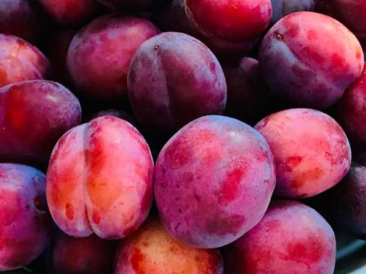

Prunus salicina 'Santa Rosa'
Common Names: Santa Rosa Plum, Japanese Plum
Local Name: Alubukhara (Hindi), Plum (Tamil)
Family: Rosaceae
Origin: Developed by Luther Burbank in California, USA (from Japanese plum stock)
Plant Type: Perennial deciduous tree
Variety: Santa Rosa — self-fertile Japanese plum with red-purple skin and amber flesh
Average Lifespan: 20–30 years
| Growth Habit | Medium-sized spreading deciduous tree with rounded canopy |
| Plant Size | 4–8 meters tall; canopy spread 4–6 meters |
| Leaves | Alternate, elliptic-lanceolate, 6–12 cm long, serrated margins, medium green |
| Flowers | White to pale pink, 2–3 cm across, 5-petaled, borne singly or in clusters before leaves |
| Flower Characteristics | Showy spring bloom; fragrant; attract bees; appear before leaf emergence |
| Fruit | Medium to large, 5–7 cm diameter, round; juicy amber-yellow flesh near skin turning red near stone; sweet with slight tartness |
| Fruit Color | Deep crimson-red to purple skin with blue bloom; amber-red flesh |
| Seed Characteristics | Single hard stone (clingstone to semi-freestone) |
| Root System | Moderately deep with spreading lateral roots |
| Climate | Temperate to subtropical; requires 400–500 chill hours below 7°C |
| Temperature Range | 15–30°C during growing season; needs winter chill; tolerates -15°C dormant |
| Rainfall Requirement | 600–1200 mm annually; well-distributed |
| Soil Type | Deep, well-drained loamy soil; avoid heavy clay |
| Soil pH Preference | 5.5–6.5 |
| Sun Requirement | Full sun (8+ hours daily) |
| Spacing | 4–6 meters between trees |
| Irrigation Method | Drip irrigation; consistent moisture during fruit development |
| Water Requirement | Moderate; avoid waterlogging |
| Can it Grow in Pots? | Yes, dwarf rootstock in large containers (40+ liters) |
| Fertilizer Schedule | Early spring (bud break), post-fruit set, post-harvest |
| Recommended Organic Fertilizers | Compost, well-rotted manure, bone meal, potash |
| Pesticide Frequency | Dormant spray + 2–3 sprays during growing season |
| Recommended Organic Pesticides | Dormant oil spray, neem oil, kaolin clay, Bt for caterpillars |
| Mulching Practice | Organic mulch (5–8 cm) around base; keep away from trunk |
| Training System | Open vase (open centre) system preferred |
| Pruning Time | Late winter during dormancy; summer thinning |
| How to Prune | Remove 1/3 of previous year's growth; thin fruit to 10–15 cm apart for larger fruit |
| Common Pests | Plum curculio, aphids, oriental fruit moth, scale insects |
| Common Diseases | Brown rot, bacterial canker, plum pox virus, leaf curl |
| Disease Prevention & Remedies | Dormant copper spray, remove mummified fruit, good air circulation, resistant rootstocks |
| Flowering Months | February–March (early spring, before leaves) |
| Fruiting Season | June–August; 90–120 days after flowering |
| Days to Harvest | 90–120 days from bloom |
| Harvest Indicators | Fruit develops full colour, slight softening, sweet aroma, yields to gentle pressure |
| Average Yield per Plant | 30–60 kg per tree per year (mature tree) |
| Pollination Type | Partially self-fertile; cross-pollination improves yield |
| Pollination Notes | Self-fertile but plant Beauty or Satsuma plum nearby for better crops; bees essential |
| Pollination Details | Partially self-fertile; honeybees are primary pollinators; cross-pollination significantly improves yield |
| Propagation by Seeds | Seeds require stratification (60–90 days cold); seedlings variable; not true-to-type |
| Propagation by Cuttings | Hardwood cuttings in winter; moderate success with rooting hormone |
| Propagation by Grafting | T-budding or whip grafting on Myrobalan or peach rootstock (standard commercial method) |
| Water Usage | Moderate; efficient with drip irrigation |
| Soil Conservation Practices | Cover crops between rows; mulching prevents erosion |
| Organic Practices Used | Integrated pest management, composting, cover cropping |
| Companion Plants | Clover, comfrey, nasturtium as ground cover |
| Biodiversity Benefits | Spring flowers support early-season pollinators; fruit attracts birds |
| Commercial Production Regions | California (USA), Chile, South Africa, Australia, India (Himachal Pradesh, J&K) |
| Market Uses | Fresh fruit, dried plums, juice |
| Processing Uses | Jams, preserves, dried prunes, wine, baking |
| Market Value (Approx.) | ₹80–200 per kg (India); premium stone fruit |
| Symbolism | Plum blossoms symbolise resilience and renewal in East Asian cultures |
| Traditional Uses | Dried plums (prunes) used in traditional medicine as a digestive aid; plum wine in Asian cultures |
| Calories | 46 kcal per 100g |
| Dietary Fiber | 1.4 g per 100g |
| Vitamin C | 9.5 mg per 100g |
| Vitamin A | 345 IU per 100g |
| Iron | 0.17 mg per 100g |
| Potassium | 157 mg per 100g |
| Antioxidants | Anthocyanins, chlorogenic acid, neochlorogenic acid, quercetin |
| Other Key Nutrients | Vitamin K, copper, manganese |
| Anxiety & Sleep | Not a primary use for this species |
| Immune Support | Vitamin C and antioxidants support immune function |
| Anti-inflammatory Properties | Phenolic compounds show anti-inflammatory and antioxidant activity |
| Heart Health | Potassium and antioxidants support cardiovascular health; low in sodium |
| Digestive Health | Dried plums (prunes) are well-known natural laxatives; sorbitol and fiber aid digestion |
Disclaimer: Information provided is for educational purposes only and not a substitute for medical advice.
Add your field observations here.